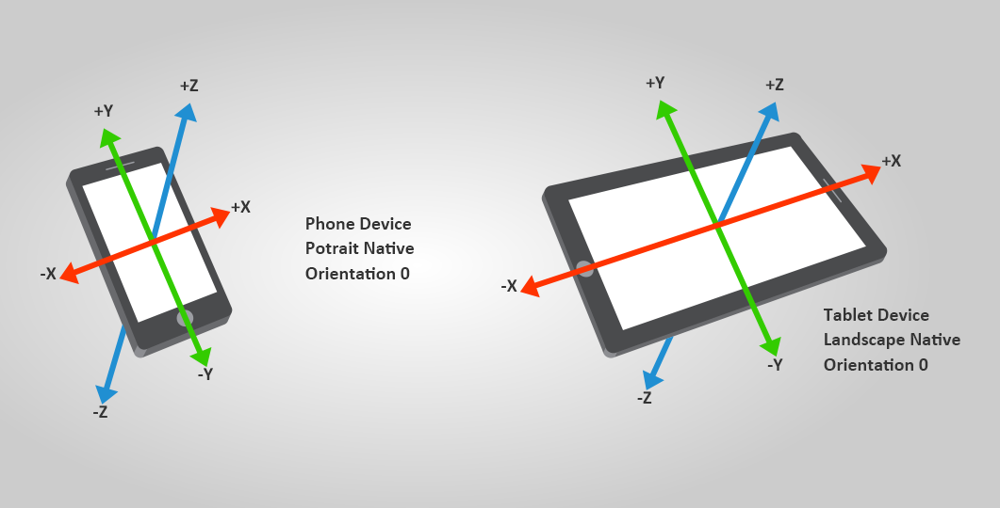

Sensors
Intermediate Programmer
You can use various sensors, such as gyroscopes and accelerometers, as input devices in your project. Sensors are often used in mobile games.
Use InputManager to access sensors and:
- check if a sensor is supported by Stride
- disable a sensor
- retrieve sensor data
Stride can receive data from six types of sensor:
- Orientation
- Accelerometer
- UserAcceleration
- Gravity
- Compass
- Gyroscope
They inherit from ISensorDevice.
Stride creates a default instance for each sensor type. You can access each instance from the InputManager.
Sensors are state-based. Each sensor instance is automatically updated every frame, and contains the value of the sensor just before the update.
For example, to access the accelerometer, use:
var accelerometer = Input.Accelerometer;
Check if a sensor is available
Before you get the value of a sensor, check that the sensor is available in the device (ie not null). For example, to check if the compass is available:
var hasCompass = Input.Compass != null;
Note
If a sensor isn't natively supported by the device, Stride tries to emulate it using the device's other sensors.
Enable a sensor
By default, Stride disables all available sensors, as retrieving and updating sensor data takes significant CPU time.
To enable a sensor, set IsEnabled to true. When you don't need the sensor, disable it by setting the property to false.
Use the orientation sensor
The orientation sensor indicates the orientation of the device with respect to gravity and the Earth's north pole. The orientation is null when the device's Y-axis is aligned with the magnetic north pole and the Z-axis with the gravity. You can use orientation data to control various actions in a game.

Use Input.Orientation to get the current orientation of the device.
| Property | Description | Declaration |
|---|---|---|
| Roll | The rotation around the X-axis | public float Roll { get; } |
| Pitch | The rotation around the Y-axis | public float Pitch { get; } |
| Yaw | The rotation around the Z-axis | public float Yaw { get; } |
| Rotation Matrix | The device rotation | public Matrix RotationMatrix { get; } |
| Quaternion | The device orientation and rotation | public Quaternion Quaternion { get; } |
For example:
var orientation = Input.Orientation.Quaternion;
Note
Stride provides the orientation under the pitch/yaw/roll, rotation matrix, or quaternion forms. We recommend the quaternion form as it doesn't suffer from gimbal lock.
Motion sensors
Motion sensors measure acceleration forces such as tilts, shakes, and swing. Stride supports three types of motion sensor:
- Accelerometer: measures the raw acceleration
- Gravity: measures gravity only
- UserAcceleration: measures only the acceleration applied by the user
The sensors use the physic relation Accelerometer = Gravity + UserAcceleration.

Motion sensors have a single field that specifies the current acceleration vector on the device. Stride measures the acceleration in meters per second squared.
This image shows the coordinate basis Stride uses to measure acceleration on smartphones and tablets:

Use the accelerometer
The accelerometer measures the raw acceleration applied to the device. This includes gravity and user acceleration.
Note
When the user isn't applying force, the device acceleration is equal to its gravity.
To get the raw acceleration, use Accelerometer.Acceleration. For example:
var acceleration = Input.Accelerometer.Acceleration;
Use the user acceleration sensor
The user acceleration sensor is similar to the accelerometer, but measures the acceleration applied only by a user (without gravitational acceleration).
To get the user acceleration, use UserAcceleration.Acceleration. For example:
var userAcceleration = Input.UserAcceleration.Acceleration;
Use the gravity sensor
The gravity sensor gives a 3D vector indicating the direction and magnitude of gravity (meters per second squared) acting on the device.
To get the gravity vector, use GravitySensor. For example:
var gravityVector = Input.Gravity.Vector;
Use the compass sensor
The compass indicates measures the angle between the top of the device and the North Pole. This is useful, for example, to rotate and align digital maps.

To get this angle, use CompassSensor.Heading. For example:
var heading = Input.Compass.Heading;
Use the gyroscope
The gyroscope measures the rotation speed of the device (radians per second).
To get the rotation speed, use GyroscopeSensor.RotationRate. For example:
var rotationRate = Input.Gyroscope.RotationRate;
var rotationSpeedX = rotationRate.X;
var rotationSpeedY = rotationRate.Y;
var rotationSpeedZ = rotationRate.Z;
Example code
public class SensorScript : AsyncScript
{
public override async Task Execute()
{
// Check availability of the sensor
if(Input.Accelerometer != null)
return;
// Activate the sensor
Input.Accelerometer.IsEnabled = true;
while (Game.IsRunning)
{
// read current acceleration
var accel = Input.Accelerometer.Acceleration;
// perform require works...
await Script.NextFrame();
}
// Disable the sensor after use
Input.Accelerometer.IsEnabled = false;
}
}